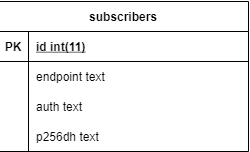

Anhand der Push-Benachrichtigungen wird nun die Verwendung von Web-APIs in PWAs erläutert.
Im Beispiel der Personentabelle werden die Push-Benachrichtigungen jedes Mal gesendet,
wenn eine Person hinzugefügt, geändert oder gelöscht wird.
Datenbank
Zuerst muss die Datenbank um eine Tabelle, nämlich die der Abonnenten (Subscribers), erweitert werden.
Dort werden alle Nutzer eingetragen, die sich für die Benachrichtigungen registriert haben.
Spalten der Abonnenten (Subscribers):
ID: Die eindeutige ID des Abonnenten
endpoint: Verwaltet die Zustellung der Benachrichtigung an den Browser
auth: Wird vom Browser bereitgestellt und authentifiziert den Nutzer
p256dh: Dieser Schlüssel wird als Teil des Abonnements zurückgegeben

PushNotifications-Model:
Neben der Datenbank muss zudem ein neues Model (PushNotificationsModel) hinzugefügt werden,
welches die Daten behandelt, die für die Push-Benachrichtigungen notwendig sind.
Dieses enthält Funktionen, um neue Abonnenten hinzuzufügen,
zu entfernen und um alle Abonnenten der Tabelle auszugeben.
// Abonnenten hinzufügen, Prinzip beim löschen gleich
public function insertSubscriber($endpoint, $auth, $p256dh){
$data = [
'endpoint' => $endpoint,
'auth' => $auth,
'p256dh' => $p256dh
];
$this->_subscribers->insert($data);
return true;
}
// Alle Abonnenten der Datenbank erhalten
public function getAllSubscribers(){
return $this->_subscribers->get()->getResult();
}
// Nutzer durch dessen endpoint ausfindig machen
public function getSubscribersByEndpoint($endpoint){
return $this->_subscribers
->where("endpoint", $endpoint)
->get()
->getResult();
}
People-Controller:
Die Funktionen für das Hinzufügen, Löschen und Bearbeiten von Personen der Tabelle müssen erweitert werden,
da jedes Mal eine Nachricht gesendet werden soll, wenn eine Änderung an der Personentabelle vorgenommen wird.
Aus diesem Grund werden als erstes über die Funktion getAllSubscribers aus dem Model
alle Abonnenten in die Variable $subscribers eingelesen.
Danach werden in die Variable $keys_auth alle Informationen der Abonnenten gespeichert,
an die die Nachricht gesendet werden soll.
Innerhalb der foreach-Schleife wird dann mit jedem Subscriber die Funktion sendMessage aufgerufen.
Diese Funktion erstellt die Nachricht, die angezeigt werden soll sowie das WebPush Objekt und versendet schlussendlich die Nachricht.
Die push_subscription-Funktion besteht aus einem switch-case und ruft, je nach Aktion, die dazugehörige Funktion des Models auf,
die dann die Person zu den Abonnenten hinzufügt, löscht oder bearbeitet.
People-View:
Nach der Anpassung der Datenbank und des Controllers muss nun als Drittes den Views ein Button hinzugefügt werden,
auf den die Nutzer klicken können, um sich für die Push-Benachrichtigungen zu registrieren.
Im Beispiel wurde dies mittels eines Button gelöst.
Eine andere Möglichkeit ist das Anzeigen eines Pop-Up-Fensters, in dem der Nutzer die Benachrichtigungen aktivieren kann.
app.js:
Die app.js-Datei fragt ab, ob ein push-Button im Dokument gesetzt ist, registriert diesen daraufhin im ServiceWorker,
und durch die registration.pushManager.getSubscription-Funktionen kann der Nutzer nun Nachrichten vom Server erhalten.
Als weiteres muss die app.js einen click-Event-Listener enthalten, der auf das Klicken des Benutzers auf den Push-Button horcht.
Besteht zum Zeitpunkt des Klicks auf den Button noch kein Abonnement, so wird die push_subscribe-Methode aufgerufen.
function push_subscribe() {
return checkNotificationPermission()
.then(() => navigator.serviceWorker.ready)
.then(serviceWorkerRegistration =>
serviceWorkerRegistration.pushManager.subscribe({
userVisibleOnly: true,
applicationServerKey: urlBase64ToUint8Array(applicationServerKey)
})
)
.then(subscription => {
return push_sendSubscriptionToServer(subscription, 'POST');
})
.then(subscription => {
isPushEnabled = true;
})
.catch(e => {
if (Notification.permission === 'denied') {
console.warn('Notifications are denied by the user.');
} else {
console.error('Impossible to subscribe to push notifications', e);
}
});
}
Die push_subscribe-Methode fragt daraufhin über die checkNotificationPermission-Methode ab, ob Push-Benachrichtigungen
vom Nutzer erlaubt/aktiviert worden sind.
Sind diese aktiviert worden, so wird der applicationServerKey über die urlBase64ToUint8Array-Methode erzeugt,
um damit die Unterstützung von Chrome zu garantieren.
Als Letztes wird das Abonnement mit allen gegebenen Parametern (publicKey,authToken undendpoint) mit Hilfe der
push_sendSubscriptionToServer-Methode als JSON durch die Verwendung von fetch an den Server gesendet.
Die Methode push_unsubscribe der app.js-Datei macht das Abonnement rückgängig.
ServiceWorker:
Da nun der Push der Nachrichten fertiggestellt ist, besteht jetzt lediglich noch das Erfordernis,
die Nachrichten über den ServiceWorker zu erstellen und danach auf dem Bildschirm des Nutzers auszugeben.
Dafür wird der ServiceWorker um 2 Funktionen erweitert.
Der ServiceWorker horcht mit Hilfe eines push-EventListener auf einen Push, erstellt daraufhin die Nachricht und
zeigt diese über die Funktion showNotification an.
Die zweite Funktion, die im ServiceWorker implementiert werden muss, wird ausgelöst, wenn der Nutzer auf den Banner der Push-Nachricht klickt.
Dabei wird das notificationclick-Event ausgelöst, welches im Beispiel beinhaltet, dass die Webseite aufgerufen wird.